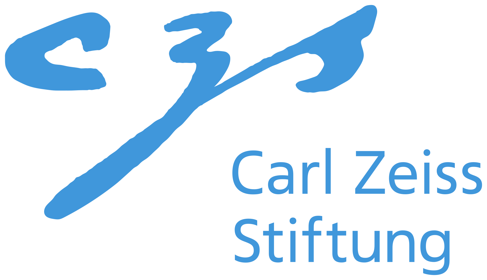
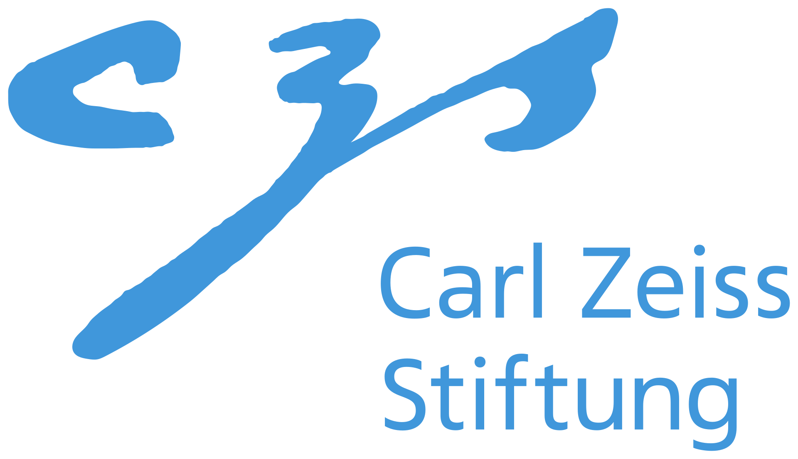
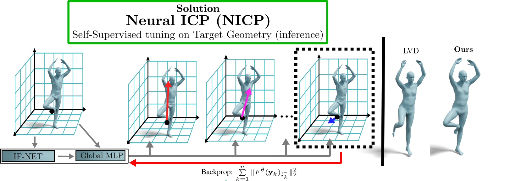

NICP: Neural ICP for 3D Human Registration at Scale
Riccardo Marin1,2, Enric Corona3, Gerard Pons-Moll1,2,4
ECCV 2024
1University of Tübingen, 2Tübingen AI Center, 3Google Research, 4Max Planck Institute for Informatics, Saarland Informatics Campus
description Paper description Supp downloading Code play_circle_filled Video
 



Abstract
Aligning a template to 3D human point clouds is a long-standing problem crucial for tasks like animation, reconstruction, and enabling supervised learning pipelines. Recent data-driven methods leverage predicted surface correspondences; however, they are not robust to varied poses, identities, or noise. In contrast, industrial solutions often rely on expensive manual annotations or multi-view capturing systems. Recently, neural fields have shown promising results. Still, their purely data-driven and extrinsic nature does not incorporate any guidance toward the target surface, often resulting in a trivial misalignment of the template registration. Currently, no method can be considered the standard for 3D Human registration, limiting the scalability of downstream applications. In this work, we propose NSR, a pipeline that, for the first time, generalizes and scales across thousands of shapes and more than ten different data sources. Our essential contribution is NICP, an ICP-style self-supervised task tailored to neural fields. NICP takes a few seconds, is self-supervised, and works out of the box on pre-trained neural fields. We combine it with a localized Neural Field trained on a large MoCap dataset. NSR achieves the state of the art over public benchmarks, and the release of its code and checkpoints will provide the community with a powerful tool useful for many downstream tasks like dataset alignments, cleaning, or asset animation.
BibTeX
@inproceedings{marin24nicp,
title = {NICP: Neural ICP for 3D Human Registration at Scale},
author={Riccardo Marin and Enric Corona and Gerard Pons-Moll},
booktitle={European Conference on Computer Vision},
year = {2024},
}Rivisiting ICP for Neural Fields

The key enabler of our generalization is NICP. (1): At inference time, we query points on the target surface; (2): For each query point, we select the offset with the minimum norm; (3): The sum of the retrieved norms for all the vertices is used to tune the backbone NF. NICP is backbone agnostic and applies to any NF.
Neural Scalable Registration (NSR)
A new state-of-the-art for 3D Human Registration (in only 1 minute)
Our method has been tested on more than ten datasets and more than 5k shapes, consistently surpassing baselines and competitors and taking the lead on public benchmarks. NSR takes around 1 minute to register an input point cloud and shows generalization to challenging cases far from the training set, like humans in clothes, challenging poses, noise or clutter, and many others. Check our paper and supplementary documents for details of our extensive experiments.


Acknowledgments
Thanks to Garvita Tiwari for the proofreading and feedback, Ilya Petrov for code refactoring, and the whole RVH team for the support. The project was made possible by funding from the Carl Zeiss Foundation. This work is supported by the Deutsche Forschungsgemeinschaft (DFG, German Research Foundation) - 409792180 (Emmy Noether Programme, project: Real Virtual Humans), German Federal Ministry of Education and Research (BMBF): Tübingen AI Center, FKZ: 01IS18039A. This project has received funding from the European Union’s Horizon 2020 research and innovation program under the Marie Skłodowska-Curie grant agreement No 101109330. Gerard Pons-Moll is a member of the Machine Learning Cluster of Excellence, EXC number 2064/1 - Project number 390727645.